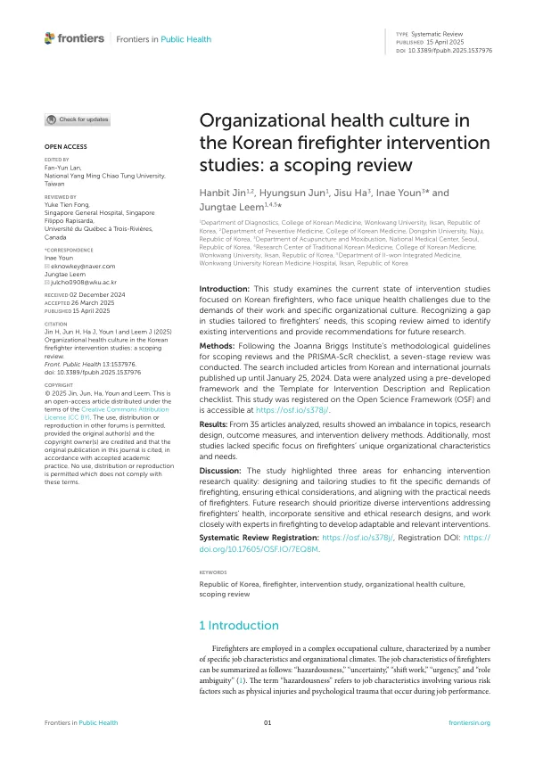

Organizational health culture in the Korean firefighter intervention studies: a scoping review
Jin H, Jun H, Ha J, Youn I, Leem J
Frontiers in Public Health 13:1537976

첫 장 · 오픈액세스First page · open access
논문 소개Summary
소방관의 일은 위험성, 불확실성, 교대근무, 긴급성, 역할 모호성으로 요약됩니다. 조직문화도 다른 직군과 다릅니다. 소방관의 건강을 위한 개입연구가 국내에서 여러 편 나왔지만, 그 연구들이 소방이라는 직무와 조직의 특성에 맞추어 설계되었는지는 확인된 적이 없었습니다. 이 고찰은 그것을 물었습니다.
조안나브리그스연구소의 주제범위 문헌고찰 지침과 PRISMA-ScR 점검표를 따라 일곱 단계로 진행했습니다. 2024년 1월 25일까지 발표된 국내외 논문을 찾았고, 미리 만든 분석 틀과 중재 기술 및 재현을 위한 점검표인 TIDieR로 자료를 정리했습니다. 연구계획은 Open Science Framework에 등록했습니다.
4,340편에서 중복 1,845편을 걸러 내고 최종 35편을 분석했습니다. 설계는 한쪽으로 쏠려 있었습니다. 양적연구가 29편(82.9%)인데 그 가운데 무작위배정 임상시험은 2편(5.7%)뿐이고 유사실험 10편(28.6%), 전실험 17편(48.6%)이었습니다. 혼합연구는 5편(14.3%), 질적연구는 1편(2.9%)이었습니다. 중재는 심리·사회적 개입이 27편(77.1%)으로 대부분이었고, 결과 측정은 자기보고 설문이 26편(74.3%), 객관적 측정이 9편(25.7%)이었습니다.
참여자 구성도 눈에 띕니다. 성별을 보고한 연구를 모으면 남성 4,108명(89.5%), 여성 484명(10.5%)이었습니다. 남성 소방관만 대상으로 한 연구는 6편이었고 여성 소방관만 대상으로 한 연구는 한 편도 없었습니다. 선정·제외 기준을 구체적으로 밝힌 연구는 10편(28.6%)에 그쳤습니다. 특정 연령대나 직급을 겨냥한 연구도 드물었습니다.
정리하면 주제, 설계, 결과지표, 전달 방식이 모두 한쪽으로 기울어 있고 소방 조직 고유의 특성과 요구를 반영한 연구는 드물었습니다. 저자들은 세 가지를 제안했습니다. 소방 직무의 실제 조건에 맞추어 설계할 것, 윤리적 고려를 갖출 것, 현장의 실질적 요구와 맞출 것입니다. 앞으로의 연구는 소방 전문가와 함께 설계해야 한다고 덧붙였습니다.
Firefighting is characterised by hazardousness, uncertainty, shift work, urgency and role ambiguity, and its organisational culture differs from other occupations. Several intervention studies for firefighters' health have been published in Korea, but whether they were designed to fit the demands of the job and the organisation had never been examined. This review asked that question.
It followed the Joanna Briggs Institute guidance for scoping reviews and the PRISMA-ScR checklist across seven stages. Korean and international articles published up to 25 January 2024 were sought, and data were organised using a pre-developed framework and the Template for Intervention Description and Replication checklist. The protocol was registered with the Open Science Framework.
Of 4,340 records, 1,845 duplicates were removed and 35 studies were finally analysed. Designs were skewed. Quantitative studies numbered 29 (82.9%), but only two of these were randomised controlled trials (5.7%), with 10 quasi-experimental (28.6%) and 17 pre-experimental studies (48.6%). Five studies used mixed methods (14.3%) and one was qualitative (2.9%). Interventions were predominantly psychological and social, in 27 studies (77.1%), and outcomes rested on self-report questionnaires in 26 (74.3%) against objective measurement in nine (25.7%).
The composition of participants also stands out. Among studies reporting sex, participants were 4,108 men (89.5%) and 484 women (10.5%). Six studies enrolled only male firefighters and none enrolled only women. Just 10 studies (28.6%) stated specific inclusion and exclusion criteria, and few targeted a particular age group or job classification.
In sum, topics, designs, outcome measures and delivery methods all lean one way, and few studies reflect the distinctive characteristics and needs of firefighting organisations. The authors propose three directions: design tailored to the actual demands of the work, adequate ethical consideration, and alignment with practical needs on the ground, adding that future studies should be developed together with firefighting experts.
인용Cite
Jin H, Jun H, Ha J, Youn I, Leem J. Organizational health culture in the Korean firefighter intervention studies: a scoping review. Frontiers in Public Health. 2025;13:1537976. doi:10.3389/fpubh.2025.1537976